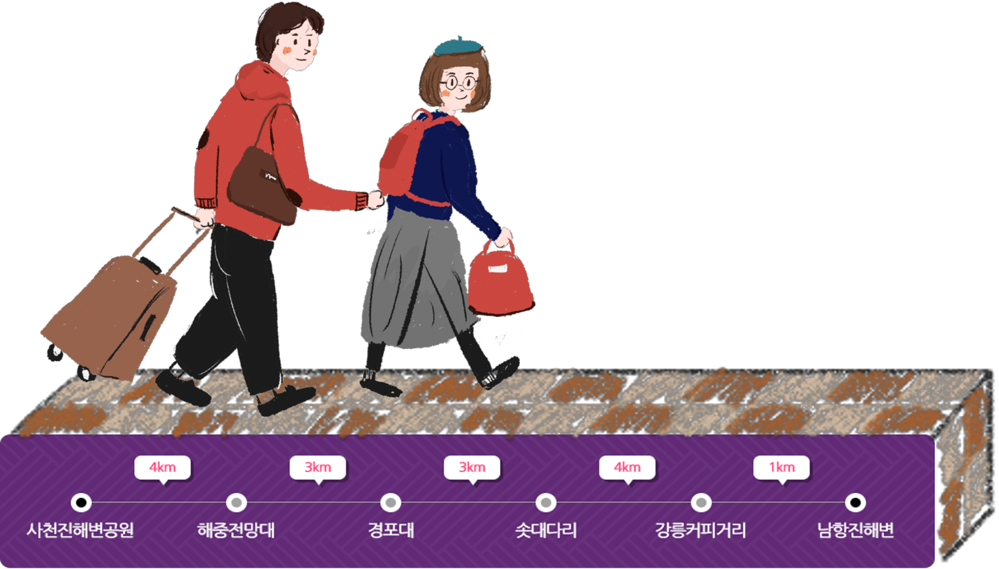

사천진리 해변공원에서 바다를 따라 남쪽으로 경포해변과 경포호수, 허난설헌이 태어난 초당마을을 지나 다시 남항진까지 바다를 따라 걷는 길입니다. 파도가 밀려오는 해변가에 조개껍질을 주으며 걸을 수도 있고, 우리나라에서 뿐아니라 동양 최대의 해변 솔밭길을 따라 걸을 수도 있습니다. 경포호숫길의 정취와 바다 옆 솔밭길이 이 길의 아름다움과 추억을 더해줍니다.

갤러리
지도
후기
안목카페 뤼미에르
너무 예쁜 뤼미에르 후회안해요! 바다가 보여서 분위기도 짱!
경포대 한미횟집
회와 대게세트 먹었는데 배부르게 먹었어요~^^ 주차장도 앞에있어서 주차하기 좋아요~
팡파미유
중앙시장은 품절될까봐 여기서 먹었는데 다행히 육쪽마늘빵 먹을수있었어요. 마늘향이 정말 강한데 안에 크림치즈와 크림이 들어있어서 중화되고 달달 알싸허게 맛있어요